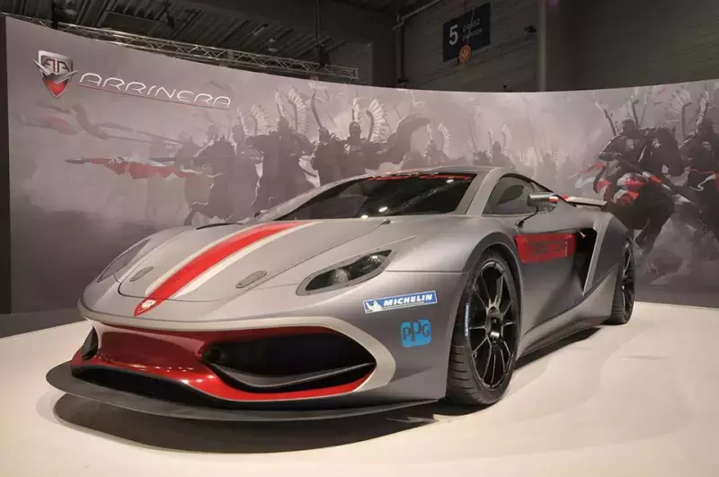

Iată câteva lucruri pe care îmi place să le prezint!
Sennheiser HD600

Fabricarea a început în 1997, acest model legendar rămâne încă unul dintre cele mai bune căști de pe piață, cu un sunet extrem de neutru și o precizie uimitoare!
Preț:
1499.99 LEU
Pro-Ject Debut Recordmaster

Realizat de Pro-Ject, acest rotor rotativ se învârte la toate viteza de 3 RPM și vine și cu un cartuș decent. De aici și numele său, este capabil să digitalizeze muzica prin redarea de unul singur!
Preț:
1999.99 LEU
Arrinera Hussarya
Fabricat de un producător polonez de mașini, Hussarya este un supercar care aduce un omagiu lui Hussars Winged încă din secolul al XVII-lea! Are peste 650 CP, poate conduce peste 320 km / h și folosește un motor V8.
Preț:
~799999.99 LEU
Samsung Galaxy S10+

Lansat în 2019, acest smartphone are unul dintre cele mai vizibile afișaje de pe piață, cu difuzoare stereo puternice și clare și o cameră foto cu 2x opt. zoom și are un obiectiv cu unghi ultra-larg. Ecranul este de 6.4 ", ceea ce îl face excelent pentru vizionarea filmelor!
Preț:
128GB - 3699.99 LEU
Gigabyte Geforce RTX 2070 Windforce 8G

Gama de gamă de înaltă performanță Nvidia RTX2070-2080Ti este activată RTX, cu performanțe extrem de bune pe toată placa. Cu 2304 nuclee CUDA și memorie GDDR6 rapidă de trăsnet, acest GPU este potrivit și pentru jocurile 4K!
Preț:
2299.99 LEU
Clearscreen ICL 4000 spray

Ciudat a intrat aici, dar ascultă! Acest spray este destinat persoanelor care nu curăță niciodată praful de pe monitoarele lor, presupunând că își trec mâinile și se confruntă cu el, pentru motivul venit. Oricum, mi se pare extrem de util, chiar și pentru telefoane. Le numești!
Preț:
41.99 LEU
Iată câteva jocuri pe care îmi place să le revedem!
Terraria
"Săpați, luptați, explorați, construiți! Nimic nu este imposibil în acest joc de aventuri plin de acțiune."
Lansat în 16 mai 2011, acest joc se învârte în jurul desfășurării într-o lume 2D generată la întâmplare, în care îți construiești propria bază și ... pe tine, pentru că va trebui să te ocupi de diverse mob-uri. constrâns să te îmbrățișeze cu orice ai. Parcurgeți peste 20 de biomi și descoperiți o mulțime de destinații pentru a vă îmbunătăți personajul!
Doriți să vă relaxați și să aveți momente pașnice, în contrast cu toate combaterile apăsătoare? Pregătește-ți tijele și momeala de pescuit și începe să pescuiești niște comori!
Așa că, pentru părerea mea despre joc, aș spune că este un spălător de timp excelent! Acest lucru se datorează mai ales cât de ușor de modificat este jocul, deoarece este un joc 2D pe 32 de biți. Într-un mod-DLC numit TModLoader, există chiar și un browser de mod dedicat care face modificarea de mai multe ori mai convenabilă decât modding Minecraft!
Chiar și fără utilizarea de mod-uri, este totuși ore de distracție, deși dacă ați început să vă plictisiți după ce ați petrecut peste 500 de ore în joc, vă recomand cu toții să vă jucați cu mods; modificarea te poate face să joci cel puțin 2000 de ore în plus fără să te plictisești!
Deci, ca un verdict, personal aș evalua acest joc ca un 8,75/10. Acest joc nu este perfect în niciun fel, dar este extrem de distractiv. Problemele sunt în ceea ce privește limitările de performanță, deoarece nu profită prea mult de GPU-uri și procesoare de înaltă performanță, care ar putea echilibra framerate-ul jocului în caz de picuri de întârziere și altele.

Preț: 49,99 LEU
Disponibil pe:
Gratuit pentru a juca
Disponibil pe:


Warframe
"Warframe este un joc cooperativ de acțiune online de free-to-play, joc de acțiune, setat într-o lume în știință în evoluție.
Aventurați-vă prin întregul sistem solar în interiorul unui corp biomecanic de înaltă tehnologie creat pentru luptă: un cadru de război. Acest joc de acțiune cu jocuri de noroc RPG spațiu-ninja are tot ce trebuie pentru a fi distractiv și antrenant.
Fiind un joc online, aveți opțiunea avantajoasă de a face echipă cu alți 3 jucători pentru a împărtăși împreună jefuirea și jefuirea fără a sacrifica nimic.
Dacă urăști că trebuie să cheltuiți bani pe o monedă plătită în joc, există opțiunea puternic recomandată de a participa la piața Warframe, unde sute și mii de jucători vând și cumpără bunuri negociabile, cum ar fi Mods, care sunt menite să îți îmbunătățească echipamentul și multe alte lucruri pentru ceva numit platină, în care ai 50 de ani când pornești cu un cont!
Nu vă faceți griji pentru escroci, deoarece atunci când jucătorul schimbă un articol nou sau face orice schimbare în tabloul de articole de tranzacționare, va trebui să apăsați din nou gata.
Așadar, după părerea mea, acest joc este la fel ca Terraria, în sensul de a avea un joc extrem de convingător și distractiv, nu doar pentru jucătorii hardcore, ci și pentru jucătorii casual. La fel ca în cazul graficelor, jocul este foarte bine optimizat, întrucât 3840x2160 pe GPU-ul RTX 2070 ajunge la 60 FPS constant la setările ultra, fără a presupune că poate rula pe un machintosh! Dacă sunteți într-un joc realist și nu vă place când AI-ul este prost, veți fi ușor dezamăgiți. Dacă căutările de calitate nu au cea mai mare importanță și un joc destul de mare, atunci acesta este jocul pentru tine!
Aș evalua acest joc un mod8,5/10.
Robocraft
"Construiți vehicule de luptă robot nebun, complet personalizabile, care conduc, plimbă, plimbă și zboară în jocul de acțiune Robocraft gratuit. Adăugați arme din viitor și săriți pe scaunul de conducere pe măsură ce îți iei creația în luptă împotriva altor jucători online!"
Această descriere de mai sus spune totul: te afli într-un garaj uriaș unde îți poți depozita propriile vehicule robot neequipate.
Alătură-te într-un hol unde vei fi dus într-un teren de luptă cu multe dealuri, ascunse, platforme și poduri, etc., pentru a traversa și planifica mișcările către victorie!
Intrați în magazinul de robot unde puteți privi mii de creații realizate de alți jucători și cumpărați-le. Nivelați-vă armele folosind-le și apoi faceți upgrade pentru mai multe daune.
După părerea mea, consider că optimizările și setările grafice ar putea fi mai bune, deși nu este un joc menit să aibă cea mai convingătoare grafică, dar acest joc este uimitor pentru ideea și conceptul său general. . Calitatea jocului constituie, de asemenea, acea idee excelentă. Tipul meu de robot personal preferat este un lunetist cu picioare de păianjen care folosește rotori pentru elicoptere pentru a zbura, mai ales pentru că este de fapt foarte eficient și super distractiv pentru a juca ca.
Construirea roboților este convenabilă: puteți oglinda construirea dvs., astfel încât orice ați construi pe o parte va fi replicat pe cealaltă parte, ca și cum ați lucra robotul din ambele părți simultan! Acest lucru economisește timp și previne asimetria.
Ca un verdict, voi oferi o mulțime de puncte pentru jocul și întregul concept în sine, dar la câteva puncte distanță pentru setările și optimizările grafice sub-par. Acest joc va avea un 7,75 / 10 .


Gratuit pentru a juca
Disponibil pe:
Preț: 99,99 LEU
Disponibil pe:

Rocket League
"Rocket League este un hibrid cu putere mare de fotbal în stil arcade și mașini vehiculare, cu controale ușor de înțeles și concurență fluentă, bazată pe fizică. Rocket League include online casual și competitiv Meciuri, un mod sezon sezon offline complet, „Mutatori” speciali care vă permit să schimbați regulile în totalitate, modurile suplimentare inspirate de hochei și baschet și mai mult de 500 de trilioane posibile combinații de personalizare cosmetică."
S-ar putea să nu fie cea mai bună modalitate de a descrie jocul, ci mai degrabă faptul că jocul este accelerat, întrucât conduci literalmente o mașină cu rachetă printr-o bilă mare de răbdare. într-un obiectiv deschis. Aceasta este o forță motrice pentru un joc nebunesc, care te obligă chiar să-ți pui băuturile energetice deoparte.
Ce mai este de spus? Există o gamemodă competitivă suplimentară numită Dropshot, care se referă la spargerea apelului pe podeaua adversarului pentru a-l deteriora. Asigurați-vă că inamicul nu atinge mingea înainte de a ateriza, deoarece aceasta ar împiedica producerea pagubelor. Este extrem de distractiv de jucat.
În opiniile mele personale, mi se pare un pic trist faptul că rulează pe 32 de biți și că jocul se simte un pic cam lent și rezoluție 4K, din experiențele mele. În afară de asta, fizica jocului se deschide către un arbore de îndemânare mare de mișcări și tehnici pentru a exersa și aplica pentru luptă. Alimentează competiția și este un joc minunat pentru E-sport. Voi evalua acest joc ca un 9,25/10, ceea ce nu face ca problema mea personală să fie o problemă mare, întrucât nu definește cu adevărat cât de grozav este jocul!